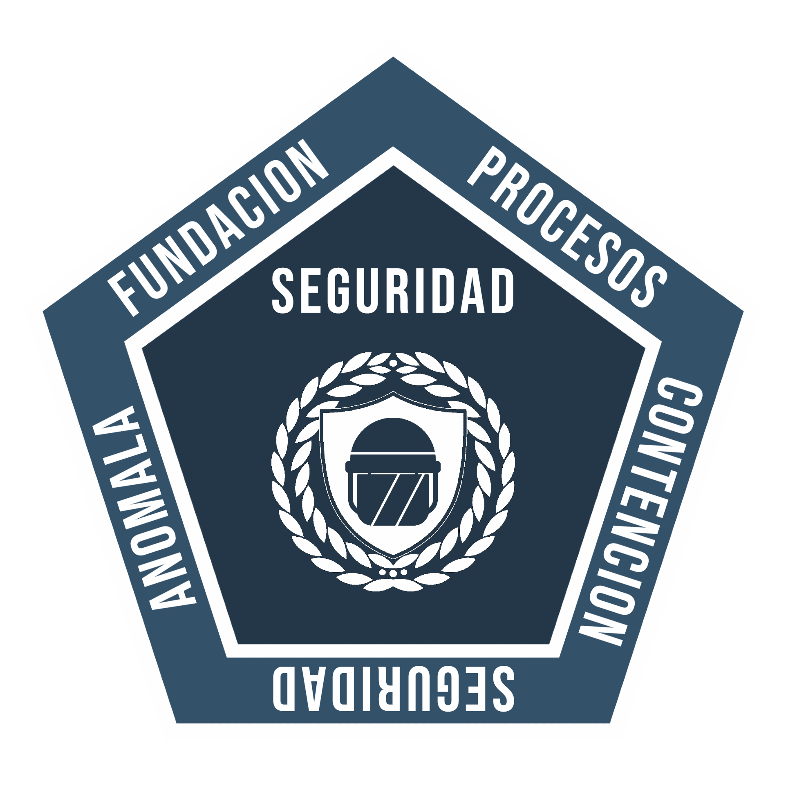
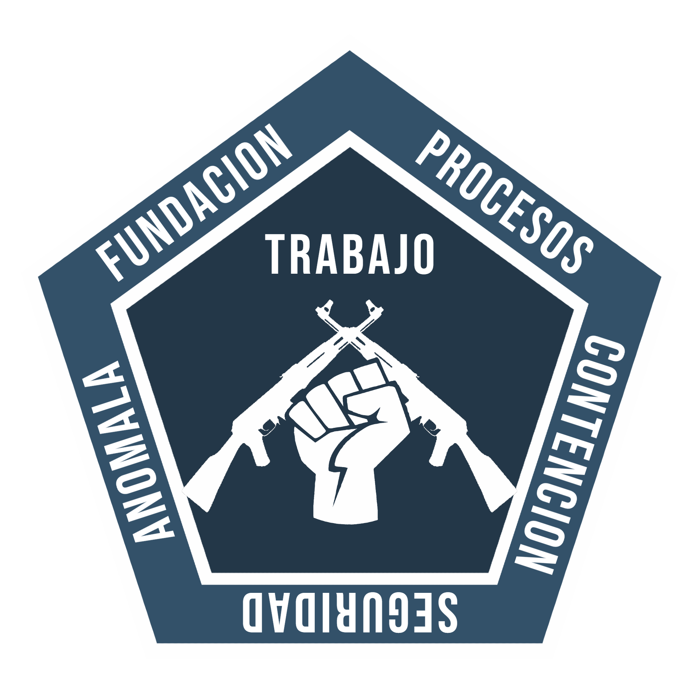
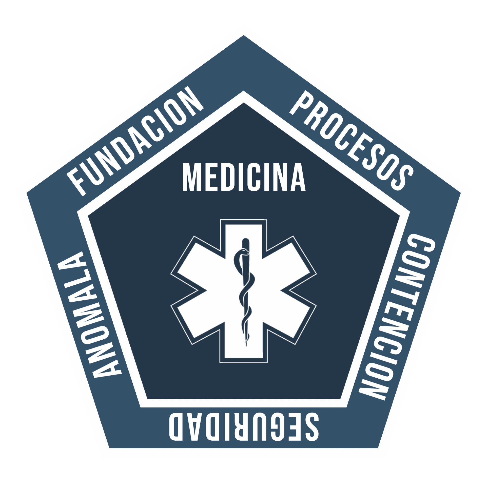
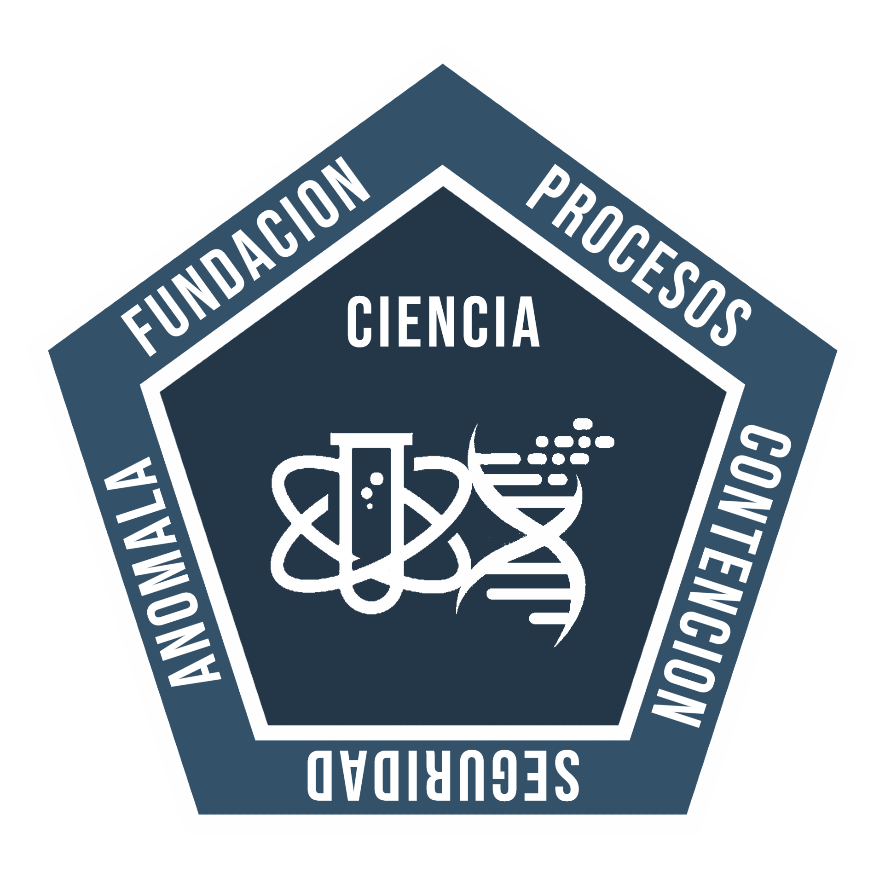
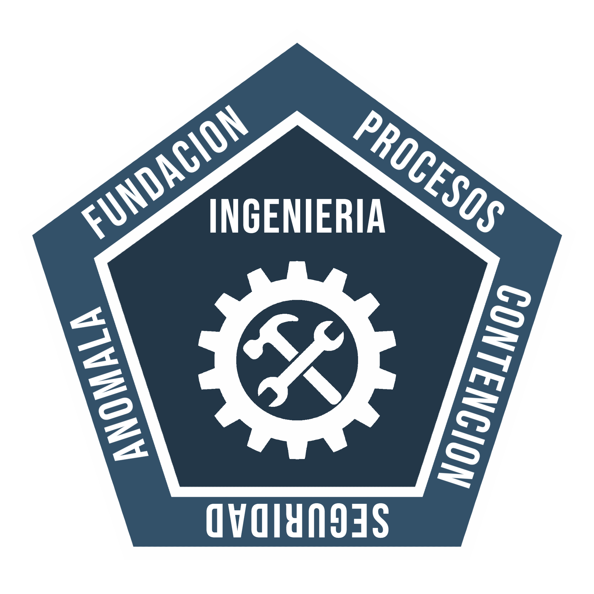

Asegurar · Contener · Proteger
La Fundación SCP es una organización secreta internacional cuya misión es localizar, asegurar y contener entidades, objetos y fenómenos que desafían las leyes de la naturaleza. Sin la Fundación, la humanidad estaría expuesta a amenazas que no puede comprender.
El Sitio-Axiom es nuestra instalación principal de operaciones. Aquí se contienen las anomalías más peligrosas y se coordinan las misiones de las Fuerzas de Tarea Móvil.
Cada agente tiene un departamento asignado, un nivel de autorización y responsabilidades específicas. Tu lealtad a la Fundación es lo único que separa a la humanidad del caos anómalo.
Somos una comunidad de LARP digital dentro de Roblox basada en el universo SCP. Organizamos sesiones en vivo llamadas SSU donde los jugadores interpretan agentes de la Fundación en tiempo real.
Únete a nuestro servidor de Discord para recibir actualizaciones de las próximas SSU, solicitar tu departamento y acceder al portal interno con tu cuenta verificada.





Cada anomalía catalogada recibe una clasificación según el nivel de peligro y la dificultad de contención. Conocer estas clases es obligatorio para todo el personal del Sitio-Axiom.
La Fundación siempre necesita personal cualificado. Únete al Discord, solicita tu departamento y recibe tus credenciales de acceso al portal interno del Sitio-Axiom.
Al acceder aceptas los Protocolos de Confidencialidad de la Fundación. Todos los accesos son monitorizados.
Comunidad de rol basada en el universo SCP Foundation (scp-wiki.wikidot.com). Proyecto fan no oficial.